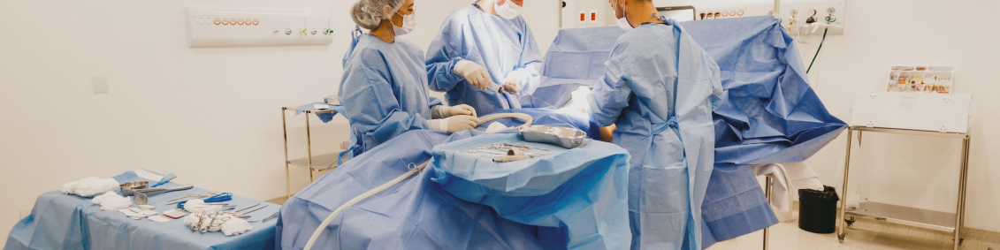

Cirurgias
Escolha uma especialidade
Selecione...
Cirurgia Cardiovascular
Cirurgia Geral
Neurocirurgia
Cirurgia do Aparelho Digestivo
Cirurgia Cabeça
Cirurgia Plástica
Cirurgia Vascular
Cirurgia Torácica
Cirurgia Oncológica
Cirurgia Pediátrica
Cirurgia Coloproctológica
Selecione um médico
Selecione...
Alváres Barreto Santana
Alline Barros dos Santos
Carlos Ferreira dos Santos
Fátima Bernardes da Silva
Fátima Celistino Almeida
Fernada Hira
Jonas Augusto Fraires
Samara Cariri dos Santos
Yago Hurin Carvalho
Enviar
Sim
Não
Confirmar
Fechar